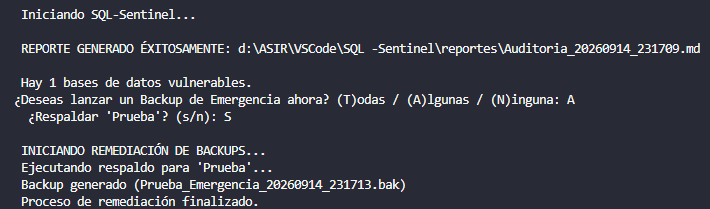

Caso de estudio / SecOps
SQL-Sentinel
Herramienta para auditar y auto-remediar instancias de SQL Server desde una interfaz CLI clara y operativa.

El problema
Las bases de datos pueden pasar días sin copias de seguridad por fallos silenciosos. Además, las escaladas de privilegios sin monitorizar exponen la infraestructura a pérdidas de datos y vulnerabilidades.
La solución
Una arquitectura modular en Python que consulta DMVs, genera reportes Markdown y permite ejecutar backups de emergencia sobre las bases de datos vulnerables.
Reto técnico
El driver ODBC bloqueaba el hilo al mezclar lecturas con comandos administrativos. Aislé la auto-remediación con autocommit=True y limpié el buffer mediante nextset() para capturar los errores reales del disco.